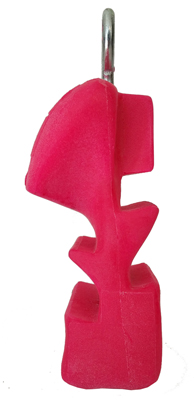

About Me
Hello, I’m Mike White and I’m passionate about web development and have been since 2008.
After spending a few years working as a full-time web developer for Concrete Exchange and Mace security I decided to move into freelance work.
I then took on contracts with various companies including Bio Radiations, Petro Industrial, Etched Creative and any more.
For a long time, one of my passions was rock climbing. After becoming more and more focused on climbing I was inspired to create a new type of training tool for climbers, this led me to invent The Gripster.
My years of web development led me to understand that many companies are competing for a slice of pie with a crowded space of saturated industries. I was inspired to create a new product in a new sector that was not saturated and didn’t have any competitors, yet!
I set out to invent a new product that would replace an outdated form of training with a new dynamic one. Little did I know that I was birthing a new era of training tools for climbing.
This process led me on a powerful journey of learning many new skills like 3D scanning, CNC routing, mold making, casting and 3D printing.
After inventing the Gripster and selling it all over the world many climbers have been inspired to add their ideas to this new era of climbing training tools.
After building my business and inspiring climbers to create exciting new training tools, I have begun to see how the next step in my creative journey is in app development. I have returned to the web development space to begin building the foundations that I need to develop the next generation of creative solutions.